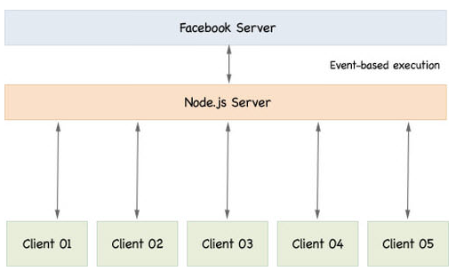

Server-Side JavaScript (with Node.JS)
Node.js is a powerful tool that could be used to execute applications not only on the server side but also on the client side. It is defined as an open source server environment developed by Ryan Dahl in 2009. With Node.js, we are able to construct scalable network applications. It is fast compared to other server side programming languages for the reason that it is written in C and non-locking I/O model. It can also be run on different operating systems like Linux, Sun OS, Mac OS X and windows platforms.
Rather than multithreaded execution, Node.js makes use of event-based server execution procedure. It makes use of event loop and is able to gauge to millions of simultaneous connections. Each I/O operation in Node.js is asynchronous which allows the server to continue processing the incoming request while the I/O operation is ongoing (see figure below). These I/O operation includes accessing an external web service, reading a file from a hard drive or waiting for a file to be uploaded, which takes a lot of time and causes inconvenience without asynchronous functionality.
Did you know?
Node.js operates on a virtual machine v8 environment which could also be called a JavaScript engine running the JavaScript
code. With this environment, it is important to host the web with the v8 environment supported web hosts. Some of these web hosts are:
1. Cloud Foundry
2. Cloudnode
3. DotCloud
4. Duostack
Node implements the commons modules standard where each module has its own context separated from the other modules.
These modules cannot occupy a global scope or interfere with other modules. The modules are referenced by name or by file path.
In addition, every module has a public API which could be used after it is imported into the script.
Loading and Exporting Modules
• Import or Load a module: use require function – returns an object that represents JavaScript API exposed by the module.
var module = require(‘module’);
• Export from a module: use module.exports object
module.exports = ‘Welcome’;
Event Emitters
- the objects which release events.
- allow programmers to subscribe to events that they need.
• EventEmitter Pseudo-class could be used to create an event emitters of the programmers’ choice.
CPS
CPS (continuation-Passing Style) is a style of programming where control is passed explicitly in a continuous manner. And it is used as a style for asynchronous programming. A function written this way takes an explicit “continuation” as an extra argument which is a function of one argument. It returns the reset value by calling the continuation function with this values as the argument.
function receiveData(data) { console.log(“data received: ” %j, data); }
//Add event listener to an event type
readStream.addListener(“data”, receiveData);
// Attach an event listener to an event type to be called once
readStream.once(“data”, receiveData);
//Removing a specific event listener of an event
readStream.removeListener(“data”, receiveData);
//Remove all event listeners of an event
function receiveData(data) { console.log(“data received: ” %j, data); }
//Add event listener to an event type
readStream.addListener(“data”, receiveData);
// Attach an event listener to an event type to be called once
readStream.once(“data”, receiveData);
//Removing a specific event listener of an event
readStream.removeListener(“data”, receiveData);
//Remove all event listeners of an event
readStream.removeAllListeners(“data”);
Helpful Links (References):
♦ https://nodejs.org/en/docs/
♦ https://www.w3schools.com/nodejs/default.asp